卡面插画图鉴 B 方案 · 58 张图覆盖全部 137 张卡 · 黑标签 = 专属卡，灰标签 = 共用这张图的泛化卡
掘者 35 图 / 51 卡
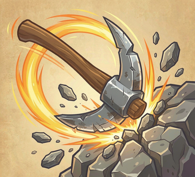
打击
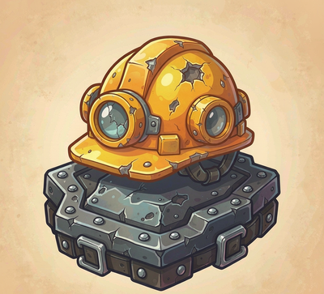
防御
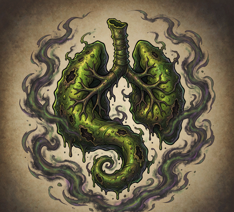
疫尘入肺
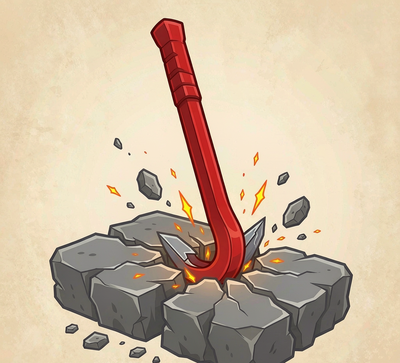
撬棍撬动撬棒连击双持撬棍
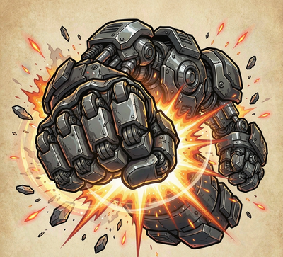
铁拳推压
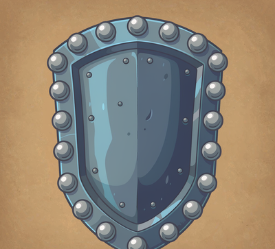
铆钉板支撑钢板护体不动如山
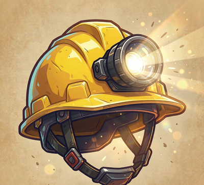
安全帽
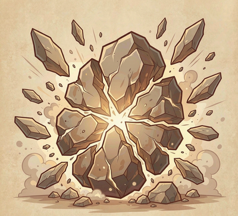
碎石破岩
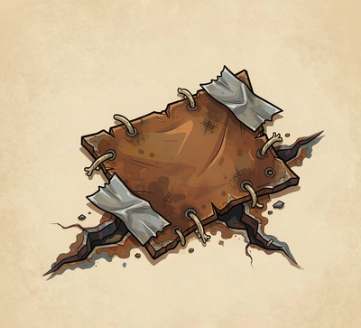
修补
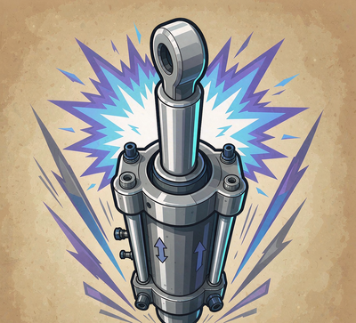
液压冲击压力阀
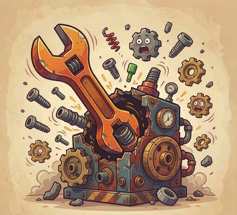
拆解废铁回收
 负重前行
负重前行
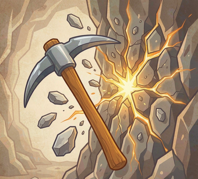
井壁凿击深井作业
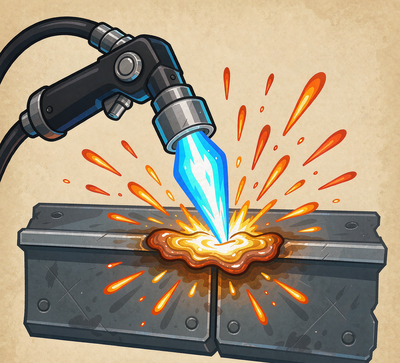
加固焊接
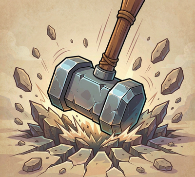
震地锤重锤作业
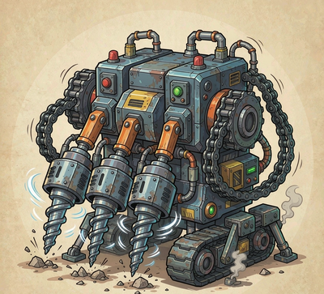
连环凿终末钻探
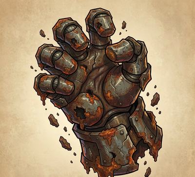
锈蚀之握
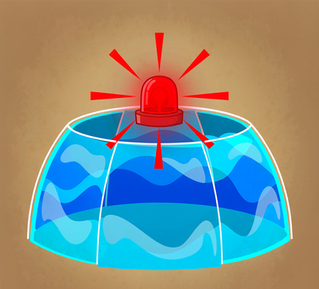
应急护盾
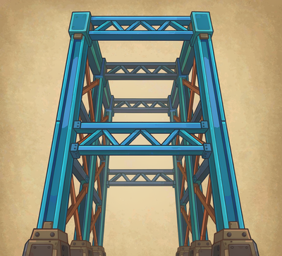
井架支撑钢梁
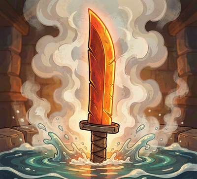
回火
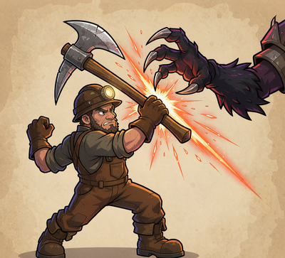
反击姿态钢铁意志
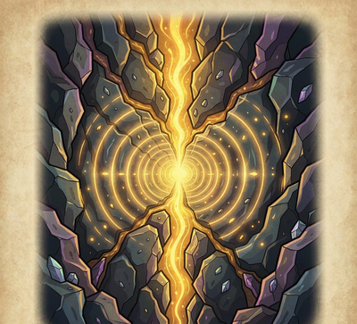
地脉共振深渊回响
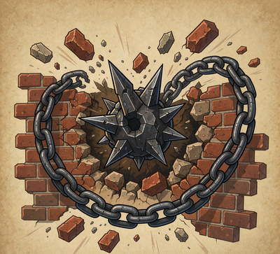
破壁索
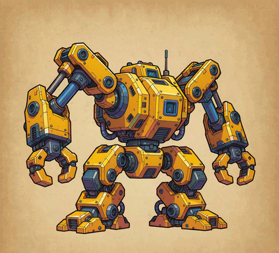
重装机甲
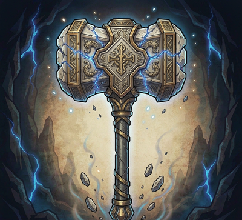
井底之锤
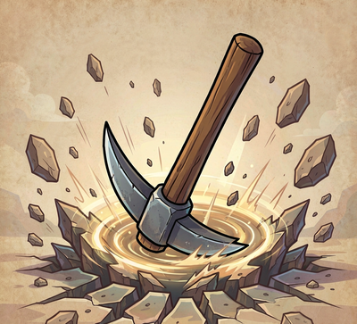
震波
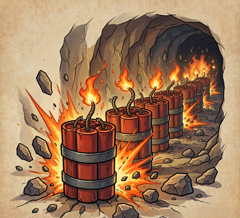
连锁爆破
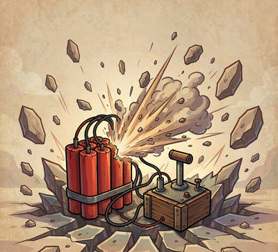
定向爆破
 炸药包
炸药包
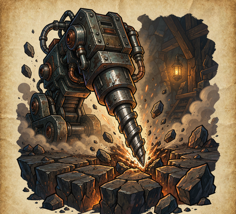
凿岩机
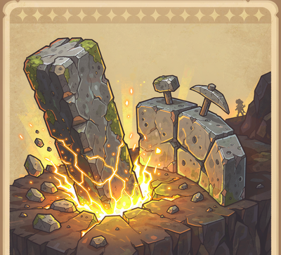
基岩锤
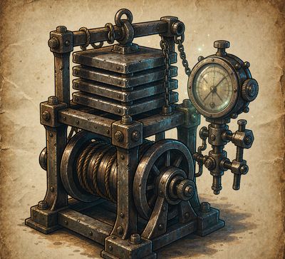
配重校准
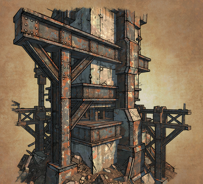
承重墙
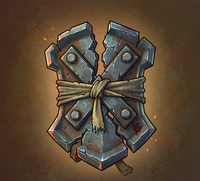
带伤作业
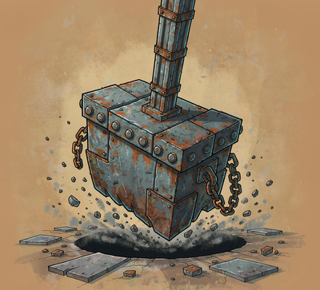
夯击
拾荒医师 12 图 / 43 卡
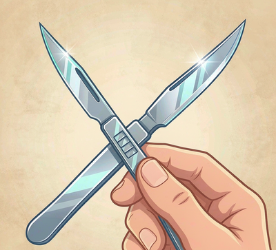
解剖刀活检清创尸检剖检
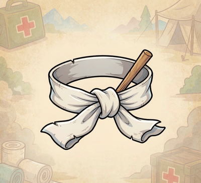
止血带缝合
采样分诊
血清注射血清三号抗体麻醉输血抗体风暴镇静剂血清X
显微镜病理分析临床观察代谢终末诊断
消毒免疫隔离防腐
培养皿菌群爆发培养基培养箱毒理学培养爆传染大流行
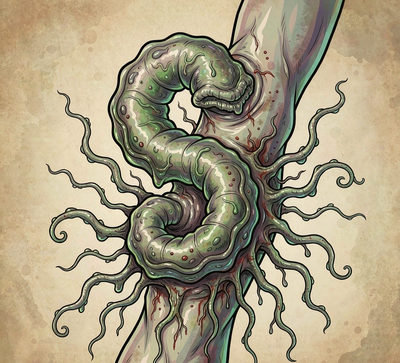
寄生毒力
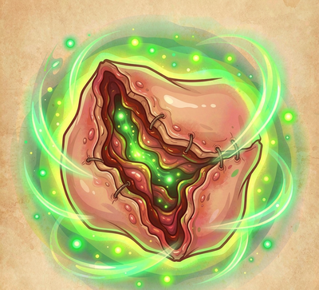
组织再生姑息复苏万灵药
多点采样
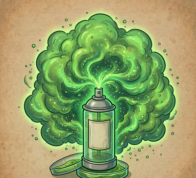
气溶胶爆发
暴发性感染
引火者 11 图 / 43 卡
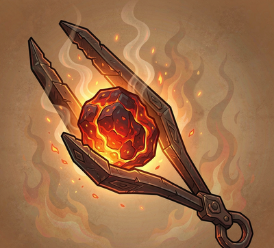
火钳灼烧焰鞭火碎雨
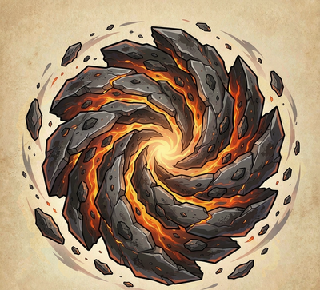
灰盾烟幕灰烬洗礼灰烬斗篷烬甲
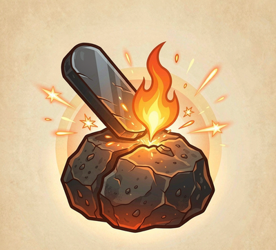
擦火引燃火种烬火灼烙复燃
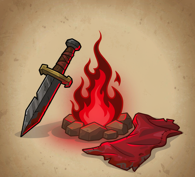
血祭献燔孤注血契血锻献祭
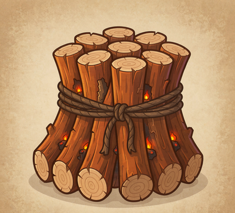
薪柴锻炉野火永燃
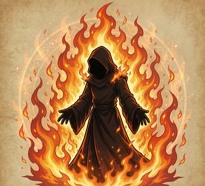
自焚焚身火葬烈焰燔祭焚世燎原
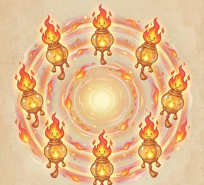
火种共鸣余烬风暴
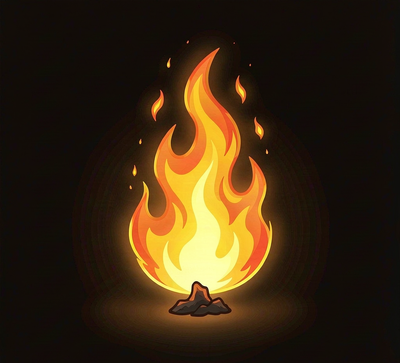
最后一把火不灭余烬爆发不死鸟灰烬重生终烬
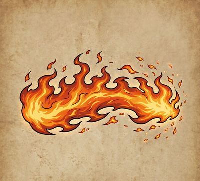
火舌
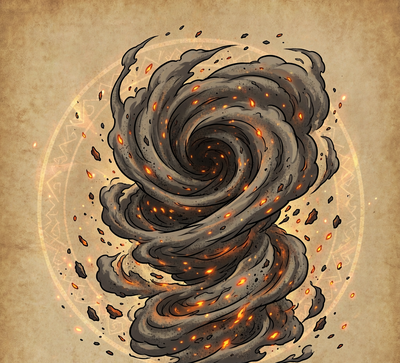
灰烬风暴
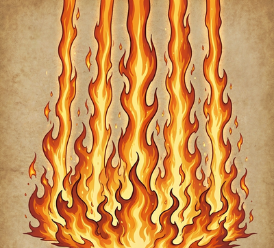
天火